Ero un po' indeciso se aggregarmi a questa escursione, dopotutto c'ero già stato diverse volte in zona e in quel periodo (giugno) avevo voglia di roccia e di allargare gli orizzonti verso nuove mete. Alla fine però il desiderio di tornare in questi posti a me cari ha prevalso, grazie anche ad una idea che mi è ritornata in testa: avevo notato, guardando il monte dallo Jovet e dai monti di Sclûse, un bel cengione che fascia il versante Sud del monte, con un canale che porta in cresta e quindi in cima. Questione piuttosto semplice: però meritava.
Due parole sull'oronimo: il monte è perlopiù noto col nome di cima Robinia, dedicato dai triestini a Robinia Occini, caduta sul M. Guarda di Uccea il 24 marzo 1974.
Partiamo da Patoc e andiamo ad imboccare il troi da li' caladis: per me è la terza volta; peccato che l'inizio del sentiero sia andato praticamente perduto.
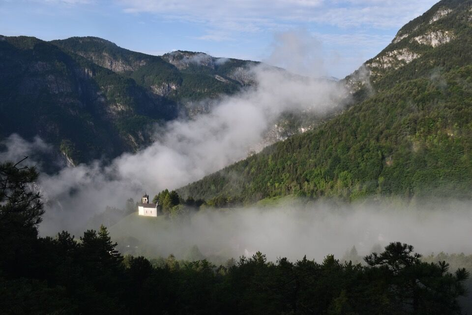 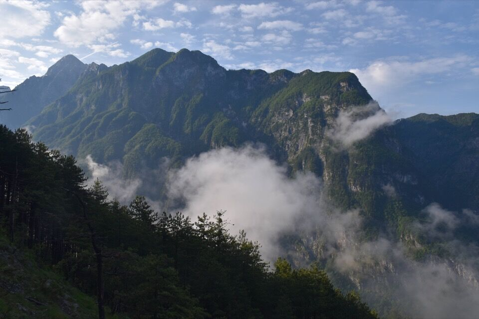Peccato: è un sentiero davvero bello, di cui non si può non apprezzare lo sforzo umano fatto nel «costruirlo». In foto, anche se non rende, una scalinata realizzata a pônte e maciûl, sorretta da un grosso muro a secco.
Verso la dorsale del Nauràzis, che non disdegno mai di uno sguardo: che avventure lo scorso inverno su per quei costoni (vedi scjalute sante)! Dietro, il Pisimoni.
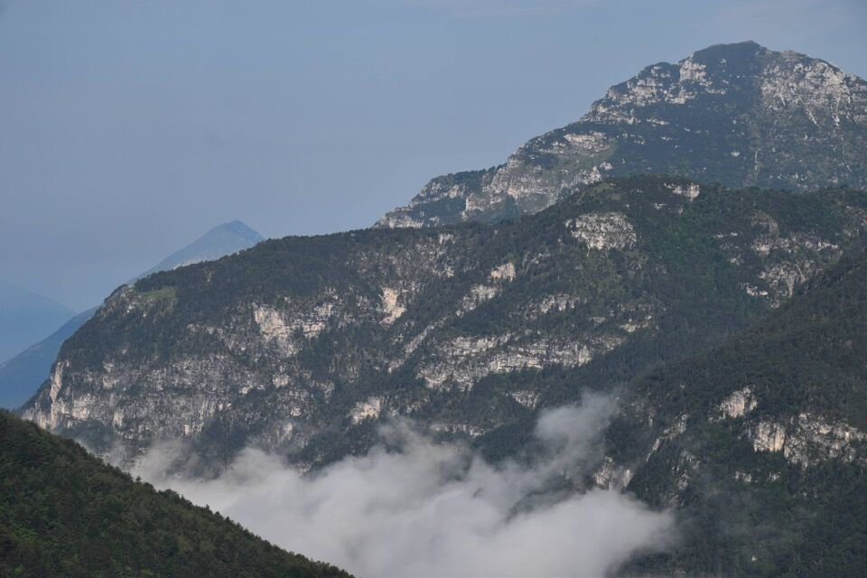Sflamburc, anch'esso salito lo scorso inverno - seppur con tempo da lupi!
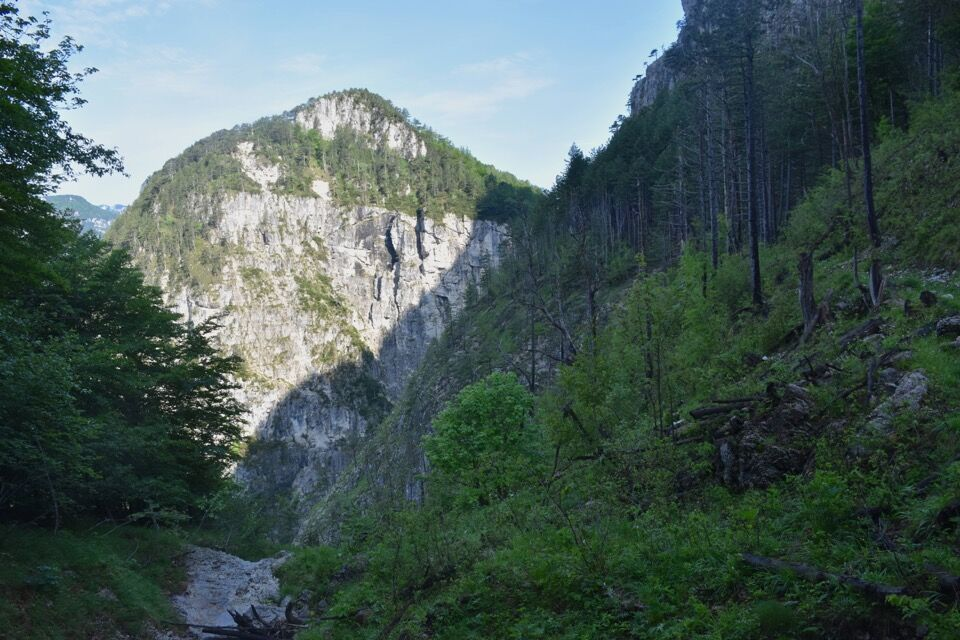Non si può non fantasticare sulle incredibili cenge da camosci che fasciano il versante Est dello Sflamburc, con sotto un vuoto inquientante sopra il rio Bianco. Alcune, pur avendo traccia ben visibile, hanno delle interruzioni: i camosci saltano. Eh sì.
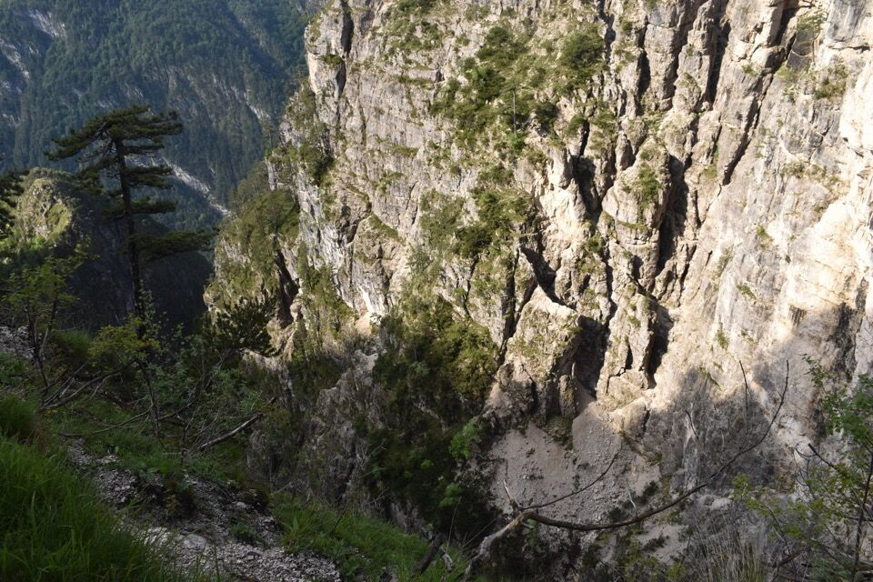Il passaggio sopra forca Galadin, brutto brutto. Questo è il motivo per cui il CAI 620 è dismesso.
Vediamo in alto la nostra meta, con pure la cengia e il canale che porta in cima. Certo che sembravano meno mughi da lontano!
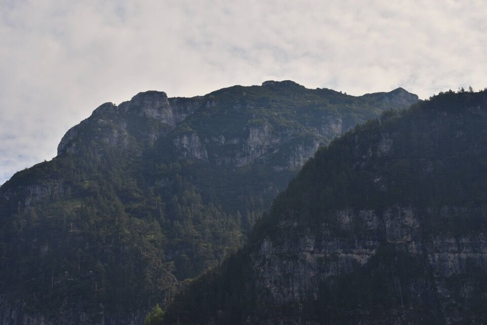Il Cuel da l'Aneit, a cavallo fra il rio Lavinâl e il rio da lis Fontanis, con dietro il Cuel da la Bareta.
Straordinaria la visione sul lontanissimo Jovet Blanc, alto sopra il misterioso rio da lis Fontanis.
 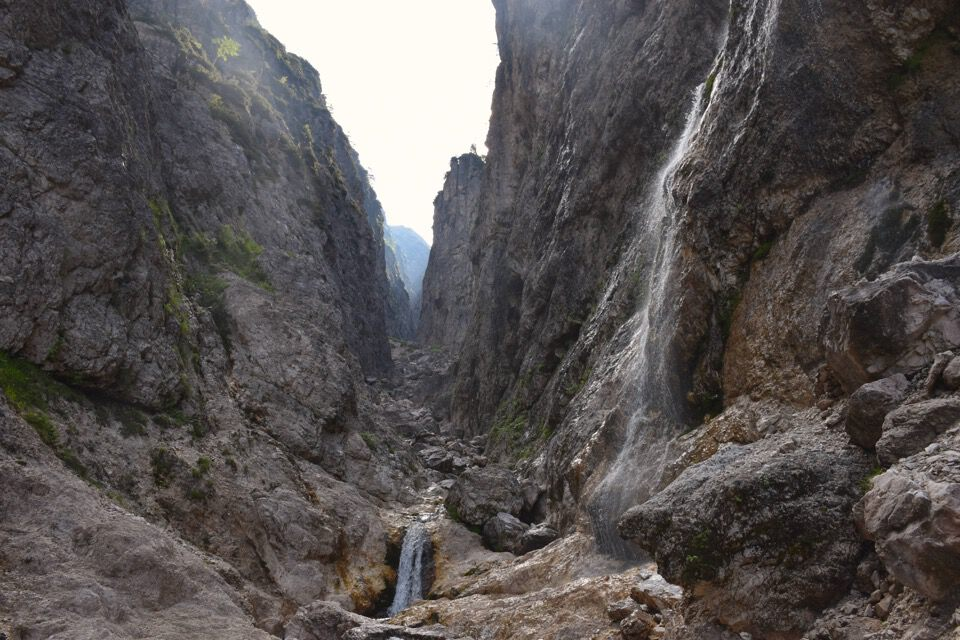
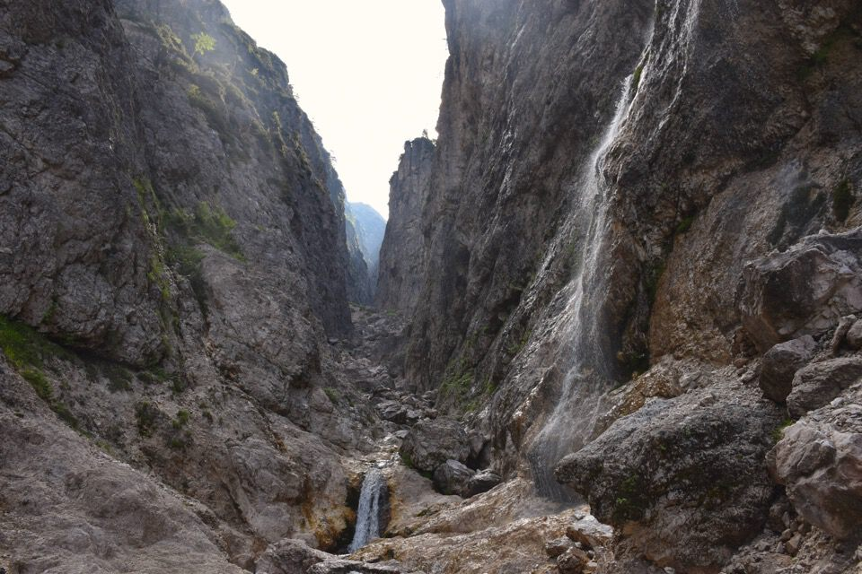
Abbandoniamo il troi dai Perons da l'Aneit e andiamo ad imboccare il cengione Sud. È un po' come la I° cengia del Pisimoni presa dalla selletta del Ciuc da la Muinie: talmente tanti mughi che non si capisce nemmeno dove sia la cengia! Per fortuna c'è anche qualche tratto di prato come in foto.
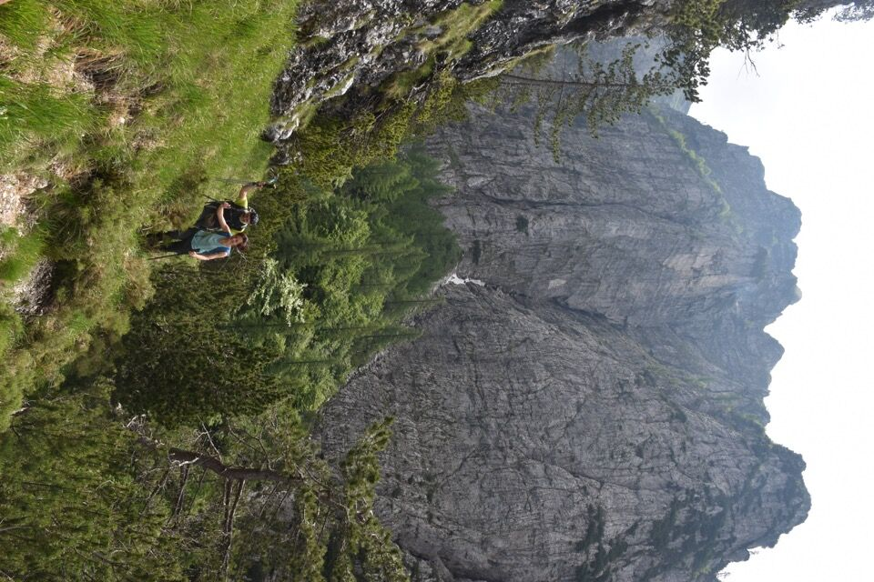Il tratto più bello, con bellissimi e ampi clapusç.
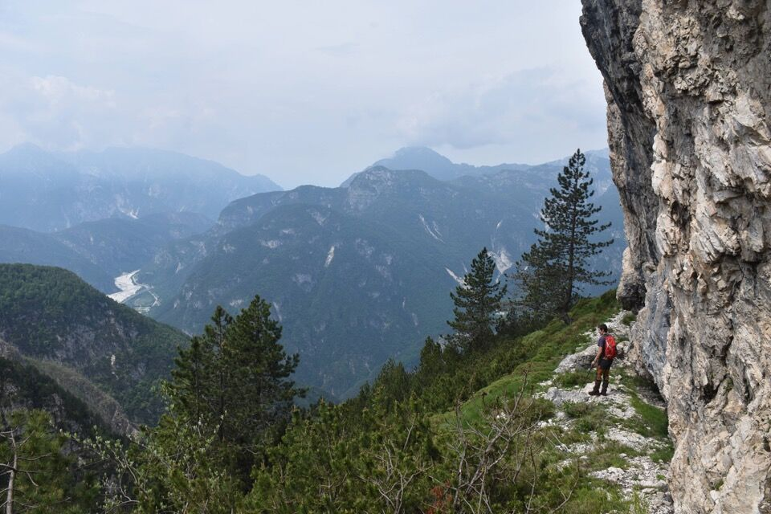Iniziamo a salire per il canale, bei passaggi sotto parete.
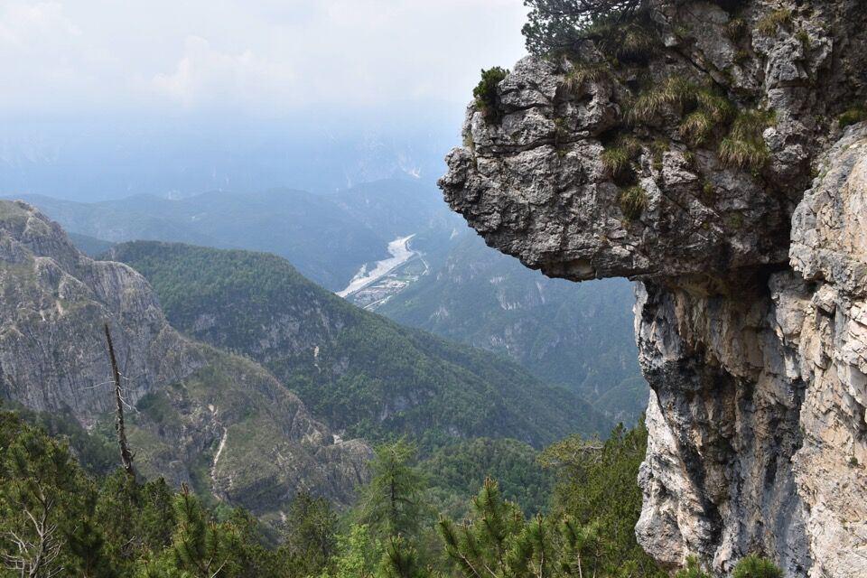Dalla q1694.5 verso la cima dello Jovet di Cjadramaç.
La temuta forca del Lavinâl, col gendarme dello Jôf di Misdì; dietro i colonnati Ovest del Cimòn.
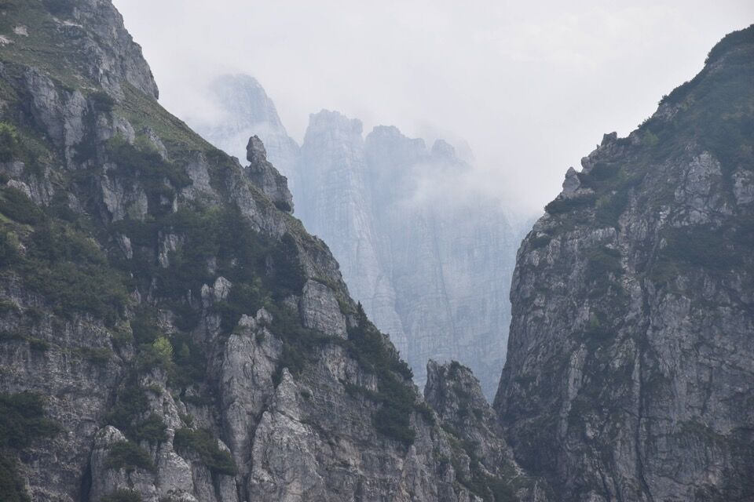Mughi a volontà oggi; quando si è lì non è facile trovare le macchie di prato che si vedono dalle foto scattate da distanza.
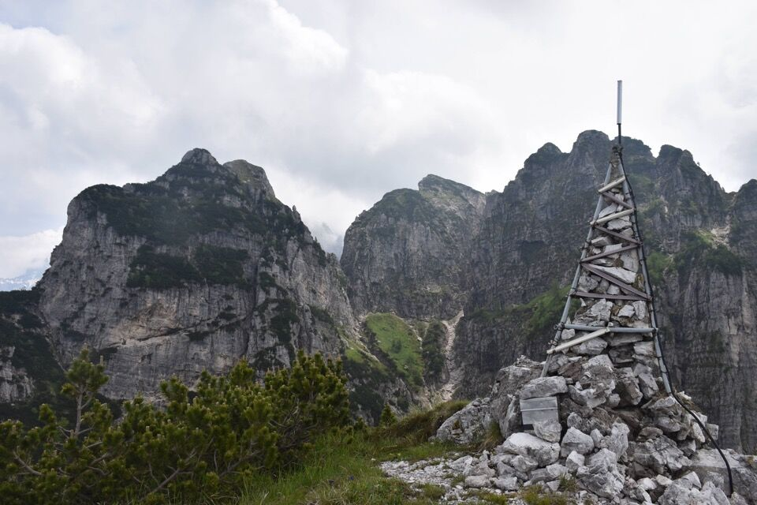Piuttosto affollata oggi lo Jôf di Misdì! Credo che le bestiacce salgano (ma a fare cosa?) traversando per cenge da brivido, percorse forse solo da Dougan, sul lato Ovest dello Jovet Blanc, cioè quello che dà sullo Sfonderât.
Che i camosci siano di casa su questa cima me lo conferma anche il fatto che ho visto una foto - con i camosci in cima - di chi ci è salito nel 2023.

Il mitico Jovet Blanc, che è la cima più a sx, con il cengione della Male Lávare: che ricordi!
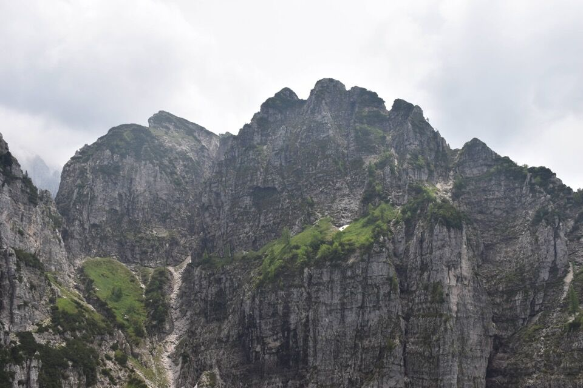Scendiamo per la «via normale», anche lì con non pochi mughi (con soddisfazione devo dire che nel mezzo di una giungla di mughi ho trovato un taglio, segno che ci ho azzeccato).
Chissà se si riesca a trovare qualche resto del leggendario stavolo che si dice un tempo fosse presente quassù.
Scendiamo, ahimé, per il noiosissimo e sporco rio Lavinâl.
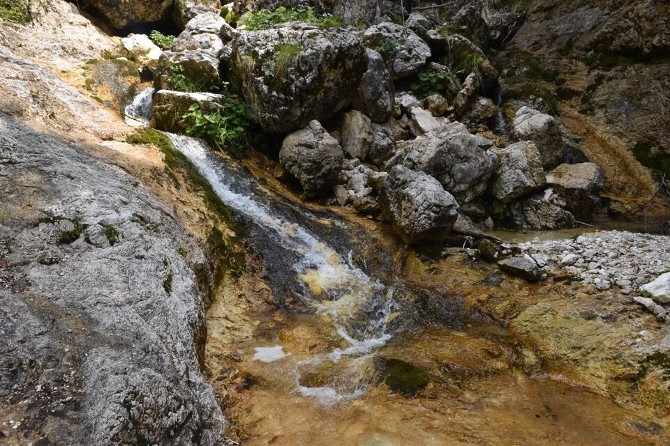Poi CAI 620 fino a Cjadramaç; guardo sempre, quando si attraversa il ghiaione che scende dal Cuel da Baite (peraltro percorribile a detta di A. Armellini), la confluenza di rii Lavinâl e da lis Fontanis: angolo stupendo, verrebbe quasi voglia di scendere lungo il ghiaione per andare a visitarlo...
Di là il Moncusson, col crinale su cui siamo saliti io Ivan e Luciana lo scorso inverno.
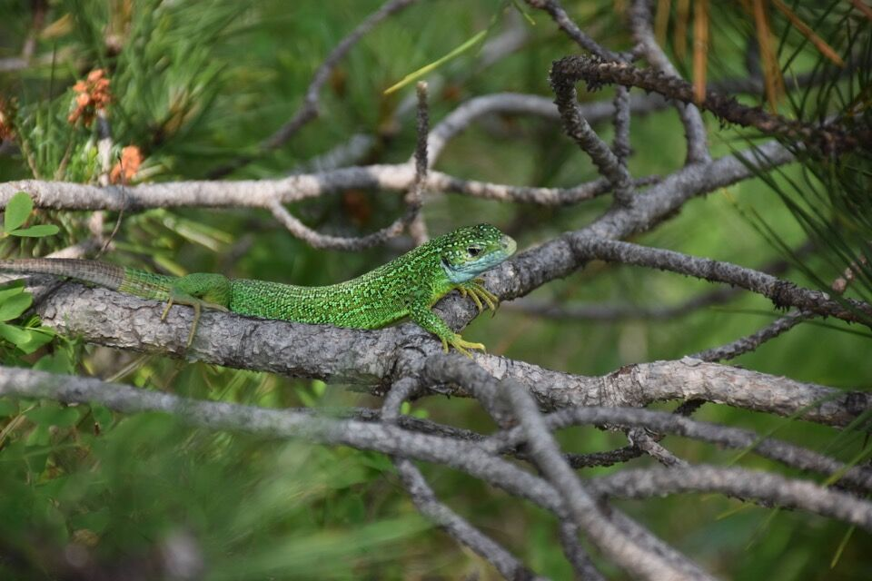 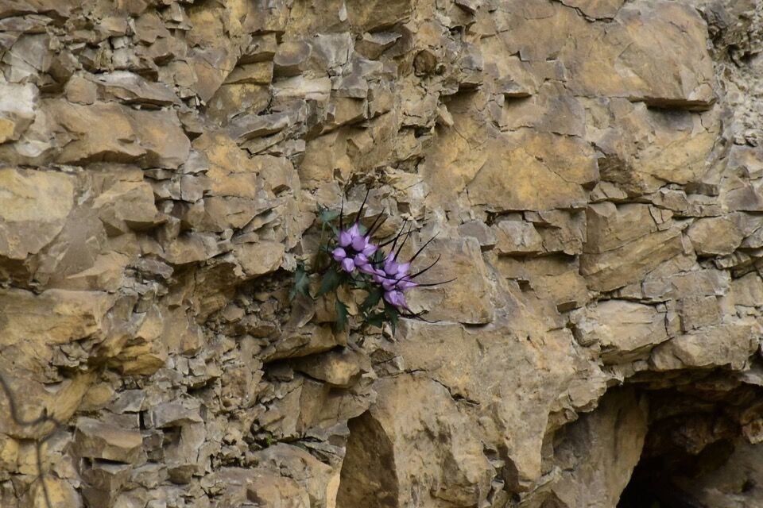